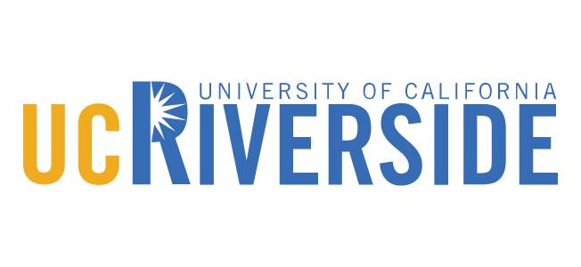
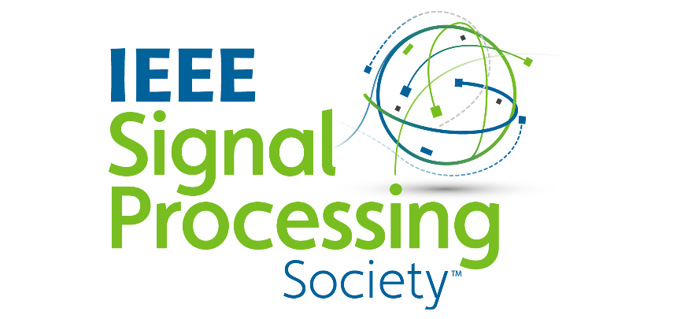

Bio
I am a PhD scholar at the University of California, Riverside (UCR) in the Optimization for Machine Learning Lab, the Department of Electrical and Computer Engineering (ECE), under the supervision of Samet Oymak.
My research interests broadly lie in machine learning, statistical learning, non-convex optimization, reinforcement learning and data-driven control.
I obtained my BSc in electrical engineering from Syed Babar Ali School of Science and Engineering (SBASSE) at LUMS.
Prior to joining UCR, I worked as a research assistant in the Smart Data, Systems and Applications Lab at LUMS from September 2015 to June 2017.
I have received the Deans Distinguished Fellowship Award at the University of California, Riverside (UCR) for the terms Fall 2017 - Spring 2018.
Research Interests
Machine learning
Statistical Learning
Non-convex Optimization
Reinforcement Learning
Data-driven Control
Experience and Affiliation
|  |
Graduate Research Assistant
Department of ECE, UCR,
Jun 2018 – Present
|
Graduate Teaching Assistant
Department of ECE, UCR,
Sep 2018 – Present
EE-260: Introduction to Deep Learning (Spring 2020)
EE-215: Stochastic Processes (Fall 2018 & Fall 2019)
EE-114: Probability, Random Variables, and Random Processes (Spring 2019 & Winter 2020)
|
|
|
Research Assistant
Department of EE, LUMS,
Sep 2015 – Jun 2017
|
|
|  |
Graduate Student Member
IEEE, IEEE Signal Processing Society
|
|
Education
Representative Publications
Journal Articles
Conference Proceedings
[Full list of publications]
|